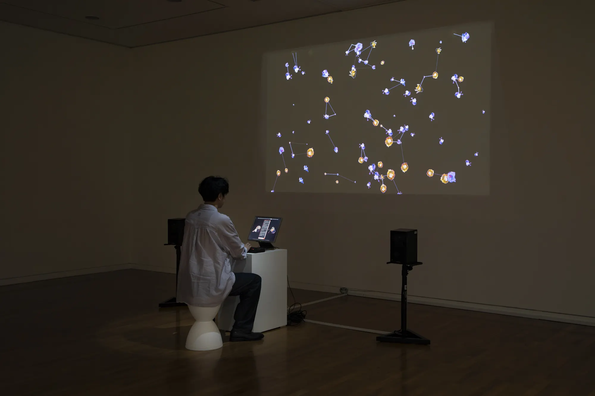
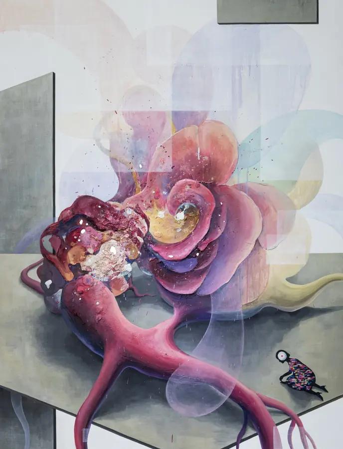

Hellochaosmos.
Yeongju Yang is a painter and media artist researching desire and trans-action: the energy that passes between humans, technology and the environment, and changes each of them on the way.
Now“Silver Egg: The Eros of Media Art”, ZKM, Karlsruhe, until 21 February 2027.
Upcoming“Human Becoming”, Shinbuldang Art Center, Cheonan, 5–14 December 2026.
Move to leave ink. Click to press a stamp.Drag to leave ink. Tap to press a stamp.
Statement
Through painting and media-based practice,
I express the invisible flows of energy that arise from interactions between organic and digital systems.
Inspired by cybernetics, posthumanism, and the life sciences,
I visualize energy in abstract, fluid forms.
We no longer simply consume information—
we generate it, replicate it, mutate it.
Desire, too, is no longer a private, silent thing.
It is broadcast, amplified, accelerated by systems we created and can no longer fully control.
I’ve been exploring chaosmos through painting since 2017.
In 2023, this project began with a question:
Where does desire come from?
And how does it transform when it spreads—like a virus—across networks of people and media?
I was drawn to the behavior of viruses:
their capacity to mutate, to resist, to pass invisibly from one host to another.
I wondered whether desire behaves the same way—changing shape as it travels,
always contagious, never still.
To express this, I turned to both analog and digital materials.
With analog stamps, I explored how repetition can contain variation.
Even with the same stamp, no two impressions are identical.
Each mark holds a mutation, however slight.
And in that imperfection, I saw the texture of desire.
and AI, became a space of retranslation.
It doesn’t merely copy analog forms—it absorbs their logic, distorts them, reimagines them.
The outputs are not simulations, but hybrids—
somewhere between memory and machine,
between the bodily and the coded.
I believe this in-between space—where analog textures and digital systems collide—
is where something new emerges.
Not reproduction, but transformation.
Not repetition, but entropy made visible.
Desire, like gravity or atoms, is unseen.
But it moves us.
It binds people, drives choices, alters systems.
It is smaller than language, but larger than logic.
Lately I sort desire into sixteen types,
then mix them to see which new desires appear.
And I am exploring a new question:
technology has made the resolution of our screens ever higher.
In which direction, then, is human resolution moving?
How are our senses and our desires working now?
And so I continue to follow it.
Not to define it,
but to observe its traces—
in form, in media,
in what we click, in what we choose,
and in what remains unseen.

9 works, 2017–2025Media Art
Interactive installations, video and narrative systems that follow desire as a viral force.

14 worksMaterial Works
Paintings and prints: the pigment and texture that feed the media work.